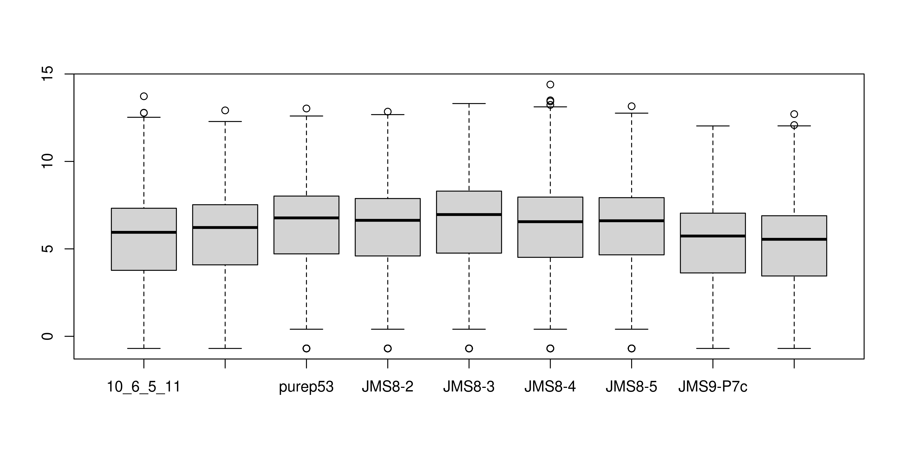
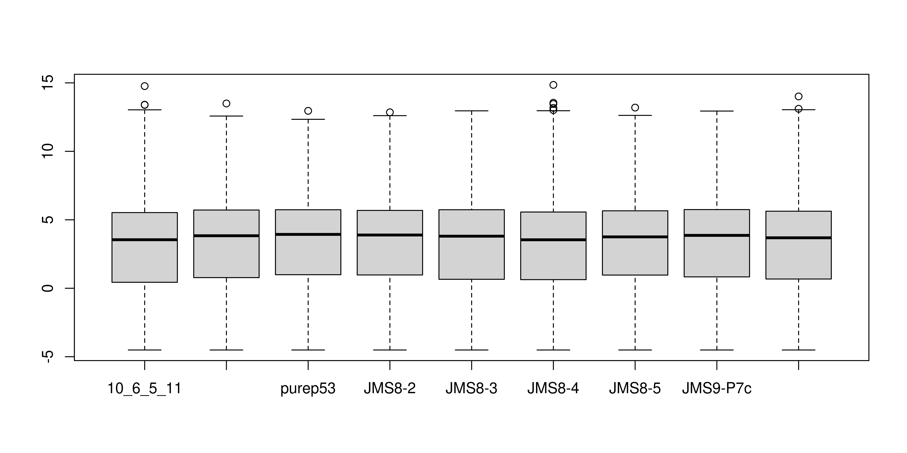
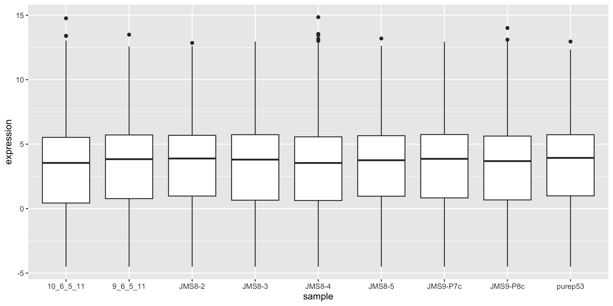
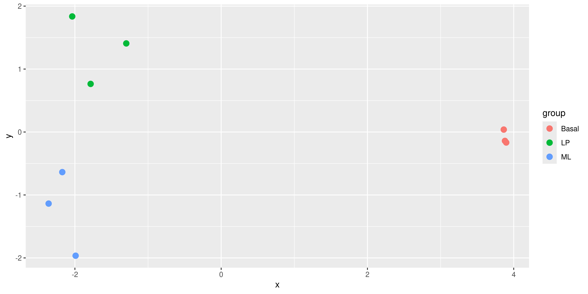

In this session we will run through the basic steps for analysing a simple RNA-seq experiment using the limma-voom workflow. This includes:
filtering out lowly expressed genes
normalisation
creating a multidimensional scaling (MDS) plot
creating a design matrix
fitting gene-wise linear models (with empirical Bayes moderation to more accurately estimate gene-wise variability)
performing statistical testing for differential expression
The aim of this session is to give you experience with a real-world RNA-seq analysis, and making extensive use of an external library. We will not cover the statistics in any depth. In general analysis packages will want your data in some specific format, so it’s important to be able to manipulate the data to fit the package’s requirements.
Much of the materials here are explained in greater detail in the limma user’s guide. You can view this by typing help("limma") and following the links.
5.1 DGEList
The data we are looking at comes from three cell populations (basal, luminal progenitor (LP) and mature luminal (ML)) sorted from the mammary glands of female virgin mice, each profiled in triplicate.
Let’s start by creating our DGEList object. As a reminder, this object contains 3 key pieces of data:
counts: the main data of this object, a matrix of count values with samples along the columns and features/genes along the rows.
samples: a data frame containing annotation for the samples. The rows in this table describe the corresponding column of the counts data.
genes: a data frame containing annotation for the genes in the counts matrix. The rows in this table describe the corresponding row in the counts matrix.
You can index the DGEList object by treating it as if it were the counts matrix, the object will handle the extraction and ordering of the sample and gene annotation data frames.
5.2 Filtering
The first step is to filter out lowly expressed genes. There are two main problems with low abundant genes:
Technical variation is more problematic for low abundance genes. This variation is thought to be due to two factors; insufficient mixing and low sampling fraction1.
Insufficient mixing of solutions during library preparation can result in uneven distribution of reads.
RNA sequencing can be thought of as sampling. Measurement errors will occur simply due to the random nature of the sampling process. This problem affects lowly abundant RNA species more because the relative error for small count values is larger than it would be for more highly abundant RNA species.
Biologically, genes that are expressed at low, biologically not meaningful, levels are not of interest.
Removing these highly variable, lowly expressed genes increases your ‘power’ to detect differentially expressed genes2, where ‘power’ is your ability to detect true positives. In testing for differential expression, a statistical test is conducted for each gene. When a high number of statistical tests are performed, a portion of them will be significant purely due to random chance. A common procedure to control for the number of false positive is to perform ‘multiple testing correction’ on the p-values. This adjusts the p-value in a way that reduces the number of false positives but comes at the cost of reduced power to detect true positives. If we filter out uninteresting, lowly expressed genes, we need to perform fewer statistical tests and reduce the impact that multiple testing adjustment has on detection power.
The filterByExpr() function provides an automatic way to filter genes.
Roughly speaking, by default, it keeps genes with a count of 10 or more, in at least as many samples as the smallest experimental group. In our experiment, there are 3 phenotype groups each with 3 samples. Therefore we retain only genes that have 10 or more counts in 3 or more samples.
More specifically, the actual filtering is done on counts per million, with similar result to the above criteria. This is to prevent bias against samples with small library sizes.
The output of this function is a vector of logicals, indicating which genes (rows) should be kept and which filtered.
We can see that we now have 16624 genes. We started with 27179 genes - meaning that ~40% of genes have been filtered out.
5.3 Normalisation
The aim of normalisation is to remove systematic technical effects. There are two main factors that need to be normalised for in RNA-seq:
Sequencing depth/library size - technically, sequencing a sample to half the depth will give, on average, half the number of reads mapping to each gene3.
RNA composition - if a large number of genes are unique to, or highly expressed in, only one experimental condition, the sequencing capacity available for the remaining genes in that sample is decreased. For example, if there are only five genes being studied in two experimental groups, if one gene is particularly high in group A, then with limited sequencing depth, that gene will reduce the counts of the remaining four genes. The effect of this is that the remaining four genes appear under-expressed in group A compared to group B when the true amount of gene product is actually equal for these 4 genes3.
Sequencing depth is accounted for by calculating the counts per million (cpm). This metric is calculated by:
taking the library size (sum of all counts for a sample),
dividing this by 1,000,000 to get the ‘per million’ scaling factor,
then dividing all read counts for each gene in that sample by the ‘per million’ scaling factor
RNA composition can be accounted for by using more sophisticated normalisation methodologies. We will use ‘trimmed mean of M-values’ (TMM), which estimates relative RNA levels from RNA-seq data3. Under the assumption that most genes are not differentially expressed, TMM calculates a library size scaling factor for each library (sample). This is done using the following steps:
calculate the gene expression log fold changes and absolute expression values for pair-wise samples (selecting one sample from the experiment as a reference)
remove the genes with the highest and lowest fold changes and absolute expression values
take a weighted mean of the remaining genes (where the weight is the inverse of the approximate asymptotic variances). This gives the normalisation factor for each library (sample)
Subsequent steps in this analysis will use log-cpm values, calculated using the normalisation factors, which scales each library size.
We can calculate the normalisation factors, specifying that we want to use the "TMM" method:
dge <-calcNormFactors(dge, method ="TMM")
This function calculates the normalisation factors for each library (sample) and puts this information in the samples data frame. Note that it takes dge (our DGEList object as input) and returns a DGEList object as well.
These normalisation factors are all close to 1 for all samples, suggesting minimal difference in relative RNA levels between samples.
boxplot(log(dge$counts +0.5))

boxplot(cpm(dge$counts, log =TRUE))

5.4 MDS plots
Before we perform statistical tests, it’s useful to perform some exploratory visual analysis to get an overall idea of how our data is behaving.
MDS is a way to visualise distances between sets of data points (samples in our case). It is a dimensionality reduction technique, similar to principal components analysis (PCA). We treat gene expression in samples as if they were coordinates in a high-dimensional coordinate system, then we can find “distances” between samples as we do between points in space. Then the goal of the algorithm is to find a representation in lower dimensional space such that points that the distance of two objects from each other in high dimensional space is preserved in lower dimensions.
The plotMDS() from limma creates an MDS plot from a DGEList object.
plotMDS(dge)
Each point on the plot represents one sample and is ‘labelled’ using the sample name. The distances between each sample in the resulting plot can be interpreted as the typical log2-fold-change between the samples, for the most differentially expressed genes.
We can change the labelling to use the name of the group the sample belongs to instead:
plotMDS(dge, labels = group)

This shows us that the phenotype groups tend to cluster together, meaning that the gene expression profiles are similar for samples within a phenotype group. The ‘Basal’ type samples quite close together while the ‘LP’ (luminal progenitor) and ‘ML’ (mature luminal) type samples are further apart, signifying that their expression profiles are more variable.
To make the three phenotype groups more distinct in our graph, we are going to colour samples from each group differently. To do this, we will use the col argument in plotMDS(). col takes in a vector the same length as the number of points in the plot (9 in our case, as there are 9 samples). Each element of the vector should be a colour name (R understands over 600 colour names), indicating what colour that sample should be.
To make this more clear, take a look at the table below, which lists all the samples and the phenotype group they belong to:
For example, let’s say we wanted LP samples to be coloured green, ML samples to be coloured red and Basal samples to be coloured blue. The col argument would then require a vector that we can generate as follows
We can also add a legend to the figure by running the legend() function immediately after a new figure is created. We have to specify where to position the legend as well as the labels and colours within the legend.
TODO: Helper functions? TODO: Convert all plots to ggplot and provide reasoning
mds_tibble <-tibble(x = mds_data$x,y = mds_data$y,label =colnames(dge),group = dge$samples$group)mds_tibble %>%ggplot(aes(x = x, y = y, col = group)) +geom_point(size =3)

5.5 References
1.
McIntyre LM, Lopiano KK, Morse AM, Amin V, Oberg AL, Young LJ, et al. RNA-seq: technical variability and sampling. BMC Genomics [Internet]. 2011 Jun 6;12(1). Available from: http://dx.doi.org/10.1186/1471-2164-12-293
2.
Bourgon R, Gentleman R, Huber W. Independent filtering increases detection power for high-throughput experiments. Proceedings of the National Academy of Sciences [Internet]. 2010 May 11;107(21):9546–51. Available from: http://dx.doi.org/10.1073/pnas.0914005107
3.
Robinson MD, Oshlack A. A scaling normalization method for differential expression analysis of RNA-seq data. Genome Biology [Internet]. 2010 Mar 2;11(3). Available from: http://dx.doi.org/10.1186/gb-2010-11-3-r25
Source Code
---filters: - naquizformat: html: toc: true toc-location: left toc-title: "In this session:"---# Session 5: RNA-seq part 1```{r, include=FALSE}library(magrittr)library(knitr)library(kableExtra)```In this session we will run through the basic steps for analysing a simple RNA-seq experiment using the [limma-voom workflow](https://f1000research.com/articles/5-1408). This includes:- filtering out lowly expressed genes- normalisation- creating a multidimensional scaling (MDS) plot- creating a design matrix- fitting gene-wise linear models (with empirical Bayes moderation to more accurately estimate gene-wise variability)- performing statistical testing for differential expressionThe aim of this session is to give you experience with a real-world RNA-seq analysis, and making extensive use of an external library. We will not cover the statistics in any depth. In general analysis packages will want your data in some specific format, so it's important to be able to manipulate the data to fit the package's requirements.Much of the materials here are explained in greater detail in the limma user's guide. You can view this by typing `help("limma")` and following the links.## DGEListThe data we are looking at comes from three cell populations (basal, luminal progenitor (LP) and mature luminal (ML)) sorted from the mammary glands of female virgin mice, each profiled in triplicate.Let's start by creating our `DGEList` object. As a reminder, this object contains 3 key pieces of data:- `counts`: the main data of this object, a matrix of count values with samples along the columns and features/genes along the rows.- `samples`: a data frame containing annotation for the samples. The rows in this table describe the corresponding column of the counts data.- `genes`: a data frame containing annotation for the genes in the counts matrix. The rows in this table describe the corresponding row in the counts matrix.```{r, warning=FALSE}# load required packageslibrary(edgeR)library(limma)library(readr)options(readr.show_col_types = FALSE)# vector of file namesfiles <- dir(path = "data/counts", pattern = "GSM")group <- factor(c("LP", "ML", "Basal", "Basal", "ML", "LP", "Basal", "ML", "LP"))samplenames <- c("10_6_5_11", "9_6_5_11", "purep53", "JMS8-2", "JMS8-3", "JMS8-4", "JMS8-5", "JMS9-P7c", "JMS9-P8c")# create DGEList objectdge <- readDGE( files, path = "data/counts", columns = c(1, 3), group = group, labels = samplenames)# add gene annotation informationdge$genes <- read_delim("data/Ses3_geneAnnot.tsv")```You can index the DGEList object by treating it as if it were the counts matrix, the object will handle the extraction and ordering of the sample and gene annotation data frames.## FilteringThe first step is to filter out lowly expressed genes. There are two main problems with low abundant genes:- Technical variation is more problematic for low abundance genes. This variation is thought to be due to two factors; insufficient mixing and low sampling fraction [@mcintyre2011]. - Insufficient mixing of solutions during library preparation can result in uneven distribution of reads. - RNA sequencing can be thought of as sampling. Measurement errors will occur simply due to the random nature of the sampling process. This problem affects lowly abundant RNA species more because the relative error for small count values is larger than it would be for more highly abundant RNA species.- Biologically, genes that are expressed at low, biologically not meaningful, levels are not of interest.Removing these highly variable, lowly expressed genes increases your 'power' to detect differentially expressed genes [@bourgon2010], where 'power' is your ability to detect true positives. In testing for differential expression, a statistical test is conducted for each gene. When a high number of statistical tests are performed, a portion of them will be significant purely due to random chance. A common procedure to control for the number of false positive is to perform 'multiple testing correction' on the p-values. This adjusts the p-value in a way that reduces the number of false positives but comes at the cost of reduced power to detect true positives. If we filter out uninteresting, lowly expressed genes, we need to perform fewer statistical tests and reduce the impact that multiple testing adjustment has on detection power.The `filterByExpr()` function provides an automatic way to filter genes.Roughly speaking, by default, it keeps genes with a count of 10 or more, in at least as many samples as the smallest experimental group. In our experiment, there are 3 phenotype groups each with 3 samples. Therefore we retain only genes that have 10 or more counts in 3 or more samples.More specifically, the actual filtering is done on counts per million, with similar result to the above criteria. This is to prevent bias against samples with small library sizes.The output of this function is a vector of logicals, indicating which genes (rows) should be kept and which filtered.```{r}keep <-filterByExpr(dge)table(keep)dge <- dge[keep, , keep.lib.sizes =FALSE]dim(dge$counts)```We can see that we now have 16624 genes. We started with 27179 genes - meaning that \~40% of genes have been filtered out.## NormalisationThe aim of normalisation is to remove systematic technical effects. There are two main factors that need to be normalised for in RNA-seq:- Sequencing depth/library size - technically, sequencing a sample to half the depth will give, on average, half the number of reads mapping to each gene [@robinson2010].- RNA composition - if a large number of genes are unique to, or highly expressed in, only one experimental condition, the sequencing capacity available for the remaining genes in that sample is decreased. For example, if there are only five genes being studied in two experimental groups, if one gene is particularly high in group A, then with limited sequencing depth, that gene will reduce the counts of the remaining four genes. The effect of this is that the remaining four genes appear under-expressed in group A compared to group B when the true amount of gene product is actually equal for these 4 genes [@robinson2010].Sequencing depth is accounted for by calculating the counts per million (cpm). This metric is calculated by:1. taking the library size (sum of all counts for a sample),2. dividing this by 1,000,000 to get the 'per million' scaling factor,3. then dividing all read counts for each gene in that sample by the 'per million' scaling factorRNA composition can be accounted for by using more sophisticated normalisation methodologies. We will use 'trimmed mean of M-values' (TMM), which estimates relative RNA levels from RNA-seq data [@robinson2010]. Under the assumption that most genes are not differentially expressed, TMM calculates a library size scaling factor for each library (sample). This is done using the following steps:1. calculate the gene expression log fold changes and absolute expression values for pair-wise samples (selecting one sample from the experiment as a reference)2. remove the genes with the highest and lowest fold changes and absolute expression values3. take a weighted mean of the remaining genes (where the weight is the inverse of the approximate asymptotic variances). This gives the normalisation factor for each library (sample)Subsequent steps in this analysis will use log-cpm values, calculated using the normalisation factors, which scales each library size.We can calculate the normalisation factors, specifying that we want to use the `"TMM"` method:```{r}dge <-calcNormFactors(dge, method ="TMM")```This function calculates the normalisation factors for each library (sample) and puts this information in the `samples` data frame. Note that it takes dge (our `DGEList` object as input) and returns a `DGEList` object as well.Let's take a look at our normalisation factors:```{r}dge$samples```These normalisation factors are all close to 1 for all samples, suggesting minimal difference in relative RNA levels between samples.```{r}boxplot(log(dge$counts +0.5))``````{r}boxplot(cpm(dge$counts, log =TRUE))```## MDS plotsBefore we perform statistical tests, it's useful to perform some exploratory visual analysis to get an overall idea of how our data is behaving.MDS is a way to visualise distances between sets of data points (samples in our case). It is a dimensionality reduction technique, similar to principal components analysis (PCA). We treat gene expression in samples as if they were coordinates in a high-dimensional coordinate system, then we can find "distances" between samples as we do between points in space. Then the goal of the algorithm is to find a representation in lower dimensional space such that points that the distance of two objects from each other in high dimensional space is preserved in lower dimensions.The `plotMDS()` from `limma` creates an MDS plot from a `DGEList` object.```{r}plotMDS(dge)```Each point on the plot represents one sample and is 'labelled' using the sample name. The distances between each sample in the resulting plot can be interpreted as the typical log2-fold-change between the samples, for the most differentially expressed genes.We can change the labelling to use the name of the group the sample belongs to instead:```{r}plotMDS(dge, labels = group)```This shows us that the phenotype groups tend to cluster together, meaning that the gene expression profiles are similar for samples within a phenotype group. The 'Basal' type samples quite close together while the 'LP' (luminal progenitor) and 'ML' (mature luminal) type samples are further apart, signifying that their expression profiles are more variable.To make the three phenotype groups more distinct in our graph, we are going to colour samples from each group differently. To do this, we will use the `col` argument in `plotMDS()`. `col` takes in a vector the same length as the number of points in the plot (9 in our case, as there are 9 samples). Each element of the vector should be a colour name (R understands [over 600 colour names](http://www.stat.columbia.edu/~tzheng/files/Rcolor.pdf)), indicating what colour that sample should be.To make this more clear, take a look at the table below, which lists all the samples and the phenotype group they belong to:```{r, echo=FALSE}library(tidyverse)kable( tibble(Samples = rownames(dge$samples), Group = group)) %>% kable_styling(full_width = F)```For example, let's say we wanted LP samples to be coloured green, ML samples to be coloured red and Basal samples to be coloured blue. The `col` argument would then require a vector that we can generate as follows```{r}group_col <- dge$samples$grouplevels(group_col) <-c("blue", "green", "red")group_col <-as.character(group_col)group_col```We can also add a legend to the figure by running the `legend()` function immediately after a new figure is created. We have to specify where to position the legend as well as the labels and colours within the legend.TODO: Helper functions? TODO: Convert all plots to ggplot and provide reasoning```{r}mds_data <-plotMDS(dge, labels = group, col = group_col)legend("topright",legend =c("Basal", "LP", "ML"),fill =c("blue", "green", "red"))mds_tibble <-tibble(x = mds_data$x,y = mds_data$y,label =colnames(dge),group = dge$samples$group)mds_tibble %>%ggplot(aes(x = x, y = y, col = group)) +geom_point(size =3)```## References